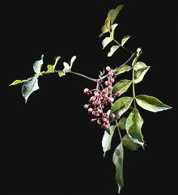

India: (photo to the left) Tirphal, Teppal, Tilfda,
Tippal, Tirphul (Z. rhetsa), is much larger than other species,
and green in color. It has much less of the tongue numbing effect than
the Sichuan species.
India: (photo to the left) Tirphal, Teppal, Tilfda,
Tippal, Tirphul (Z. rhetsa), is much larger than other species,
and green in color. It has much less of the tongue numbing effect than
the Sichuan species.These "peppercorns" are dried fruits of prickly ash trees. They are essential to the famous Sichuan cuisine of China and are used in other cuisines. The Chinese variety come in red (left in photo) and green (right in photo), but the green are still very rare here in North America (2020). The two are very similar, though the green has a touch of lime peel flavor and may be just a little stronger. Its use only started in Sichuan in 1998, and it is now favored for river fish, eels and rabbit.
The empty seed pods are used, the seeds themselves are hard, have little flavor, and are discarded. These pods are quite unique with a remarkably sharp, citrusy flavor and a numbing anesthetic effect on the tongue. Other countries, particularly Nepal, Bhutan and Tibet, use related species with flavors that vary more or less from the Chinese. Some of these are listed below.
More on Spices |
More on Citrus
 Sichuan Peppercorns were banned in the U.S. from 1968 to 2005 as a possible carrier of citrus canker, but real enforcement didn't start until 2002 - then supplies started to dry up. They are now legally available again and in good supply. Current regulations require heating the peppercorns to 160°F/70°C after which they will be somewhat less red in color. There has been debate about how much this affects the flavor, but Sichuan recipes generally call for them to be toasted before use anyway, so this debate seems irrelevant.
The empty fruit shells are much used in Sichuan China and in the Himalayan region (Nepal, Tibet, Bhutan). In Japan, young leaves are also used as a flavoring for fish, soups, and vegetables. In general the fruits are dry roasted and then ground before adding to the recipe, usually near the end of cooking.
Subst: There is no real substitute, but if you can't get them use this formula: Grind together 1/2 t black peppercorns and 2 t coriander seeds. Add grated zest of 2/3 lemon (yellow only). This will fill in for about an equal measure of whole sichuan peppercorns. While it lacks the important numbing effect it will fill in for the flavor. Photo by Didier Descouens distributed under license Creative Commons Attribution-ShareAlike v 4.0 International.
China: Shanjiao, Jaio, Fajiu (Canton) (Z. bungeanum, Z. simulans), are used mostly in Sichuan provence but also feature in Five Spice Powder, used throughout China and Southeast Asia.
Nepal: Timur (Z. alatum) is a species important to the cooking of Nepal, Bhutan, and Tibet. It's flavor differs a bit from the Chinese in being less citrusy and more spicy, but it's pretty much unavailable in North America, so use Chinese.
Korea: Sancho (Z. schinifolium) is used in Korea. It is smaller than Chinese, green in color and has little pungency. Koreans also use Chopi (Z. piperitum - see Japan).
Japan: Milder species are used in Japan, particularly Sansho (Z. piperitum syn. Z. sansho). Young leaves (kinomie) are also used as garnish for fish and as a flavoring in soups. They are said to have a flavor somewhere between lime and mint. They are also crushed with miso, then used in salads and with seafood and vegetables. Green berries are often steeped in soy sauce and used with fish. Inuzansho (Dog Sansho; Z. schinifolium) is also used.
India: (photo to the left) Tirphal, Teppal, Tilfda,
Tippal, Tirphul (Z. rhetsa), is much larger than other species,
and green in color. It has much less of the tongue numbing effect than
the Sichuan species.
Indonesia: Andaliman (Z. acanthopodium) is smaller than the others and often sold as clusters. It is less pungent than the Chinese and very citrusy.
Tibet: g.yer ma (Z. alatum) is one of the few spices available in the Himalayan region. It is used with yak meat and yak innards.
U.S. Prickly ash (Z. americanum) has not been used as a seasoning but its anaesthetic properties have been applied in toothache potions. U.S. Fagara (Z. bungeanum) an obsolete market name for Sichuan peppercorns, apparently a corruption of the Cantonese Fajiu. Most Chinese immigrants in the 19th to the mid 20th centuries were from the Canton region.
sp_sichuanz 08 r 200113 - www.clovegarden.com